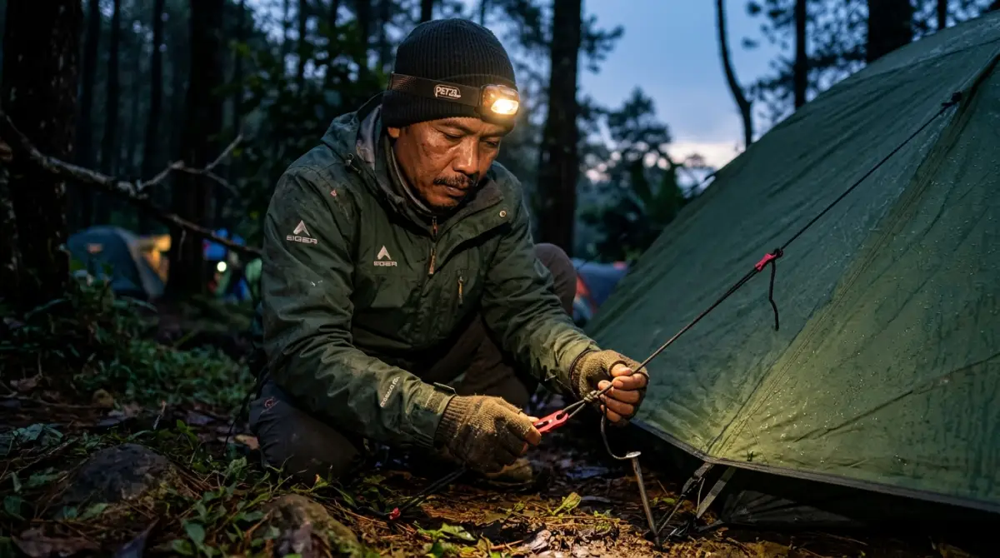

Perlengkapan camping yang tepat adalah kunci agar petualangan pertamamu di alam bebas terasa aman, nyaman, dan penuh kenangan indah.
Perlengkapan camping yang tepat adalah kunci agar petualangan pertamamu di alam bebas terasa aman, nyaman, dan penuh kenangan indah.
- Mengapa Persiapan Adalah Kunci Utama?
- Daftar Perlengkapan Camping Esensial untuk Pemula
- Tenda: Rumah Sementaramu di Alam Bebas
- Sistem Tidur: Kunci Memulihkan Energi
- Alat Masak dan Logistik: Perut Kenyang, Hati Senang
- Pencahayaan: Jangan Sampai Gelap-gelapan
- Barang Tambahan yang Bikin Camping Makin Nyaman
- Kesalahan Umum Pemula yang Wajib Kamu Hindari
- Sebuah Refleksi Sebelum Berangkat
- FAQ
Pernahkah kamu membayangkan asyiknya bersantai di depan api unggun, menikmati langit penuh bintang, dan kabur sejenak dari tumpukan deadline kantor yang bikin penat? Bayangan indah itu bisa seketika hancur berantakan kalau kamu salah membawa perlengkapan camping. Bayangkan kamu sudah bersusah payah tiba di lokasi, angin malam mulai menusuk tulang, dan kamu baru sadar tendamu rembes air atau sleeping bag-mu setipis selimut kereta api.
Rasanya pasti menyesal luar biasa, kan? Waktu, uang, dan tenaga (belum lagi cuti berharga) yang sudah kamu luangkan malah berubah menjadi momen bertahan hidup yang menyiksa. Jangan sampai pengalaman pertama yang seharusnya jadi kenangan manis malah membuatmu kapok seumur hidup.
Di awal memulai hobi outdoor, wajar kalau kamu merasa kewalahan melihat ratusan jenis alat di pasaran. Tapi tenang saja, lewat panduan ini, aku akan membantumu memilih perlengkapan esensial yang tepat agar petualangan pertamamu di alam bebas terasa aman, nyaman, dan pastinya bebas dari penyesalan.
Mengapa Persiapan Adalah Kunci Utama?
Memulai hobi camping itu mirip seperti saat kamu baru pertama kali memegang proyek besar di kantor. Kalau kamu maju presentasi ke klien tanpa data yang lengkap dan tools yang memadai, kemungkinan besar kamu akan gelagapan. Sama halnya dengan di alam bebas; alam tidak peduli apakah kamu masih pemula atau sudah expert. Kalau hujan turun, ya hujannya akan tetap deras.
Banyak pemula terjebak pada dua ekstrem: antara membawa barang terlalu sedikit karena meremehkan medan, atau memborong semua barang di toko outdoor sampai tasnya seberat dosa. Padahal, dari pengalamanku bertahun-tahun keluar masuk kawasan gunung dan hutan di Indonesia, kunci dari camping yang sukses bukanlah seberapa mahal merek perlengkapan camping yang kamu pakai, melainkan seberapa paham kamu terhadap fungsi dasar setiap barang tersebut.
Ketika kamu membawa perlengkapan yang tepat, kamu sedang berinvestasi pada kenyamanan dan keselamatanmu sendiri. Sebuah tenda yang baik akan melindungimu dari hipotermia, dan alat masak yang praktis akan memastikan perutmu tetap terisi setelah lelah membangun camp. Mari kita bedah satu per satu apa saja yang benar-benar kamu butuhkan.
Daftar Perlengkapan Camping Esensial untuk Pemula
Kita akan membagi perlengkapan camping ini ke dalam beberapa sistem dasar. Tidak perlu langsung membeli semuanya. Beberapa barang sangat aku sarankan untuk disewa terlebih dahulu di tempat penyewaan alat outdoor langgananmu untuk melihat mana yang paling pas dengan gaya bermainmu.
Tenda: Rumah Sementaramu di Alam Bebas
Hal pertama yang pasti terlintas di pikiran saat mendengar kata camping adalah tenda. Tapi, tenda seperti apa yang cocok?
Banyak pemula yang asal memilih tenda asalkan bentuknya bagus dan muat banyak orang. Padahal, cuaca di Indonesia yang tropis ini cukup tricky. Siang bisa sangat terik, namun malam bisa turun hujan badai tiba-tiba. Karena itu, sangat disarankan untuk menggunakan tenda tipe double layer (dua lapisan). Lapisan dalam (inner) biasanya terbuat dari jaring agar sirkulasi udara lancar dan kamu tidak kepanasan, sedangkan lapisan luar (flysheet) berfungsi menahan air hujan.
Pastikan kamu mengecek spesifikasi PU (Polyurethane) coating-nya. Untuk kondisi hujan di Indonesia, pilihlah tenda dengan minimal PU 2000mm. Jangan tergoda tenda single layer murah yang sering dijual di marketplace biasa; tenda jenis ini bagaikan jas hujan sauna. Kamu tidak akan kehujanan dari luar, tapi kamu akan basah kuyup karena embun dari keringat dan napasmu sendiri yang terperangkap di dalam tenda (kondensasi).
Sistem Tidur: Kunci Memulihkan Energi
Percayalah, tidur nyenyak di alam bebas adalah sebuah kemewahan. Banyak pendaki pemula gagal summit atau jatuh sakit hanya karena mereka tidak bisa tidur di malam hari akibat kedinginan. Ada dua benda krusial di sini: sleeping bag (kantung tidur) dan matras.
Sleeping bag berfungsi menahan panas tubuhmu agar tidak keluar. Untuk gunung atau area camping di Indonesia (seperti Ranca Upas atau Cibodas), sleeping bag dengan bahan dacron atau polar tebal dengan comfort rating di angka 10-15 derajat Celcius biasanya sudah sangat memadai.
Namun, sleeping bag sebagus apa pun tidak akan maksimal jika kamu tidak memakai matras. Matras berfungsi sebagai isolator antara tubuhmu dan tanah yang dingin. Tidur langsung di atas lantai tenda tanpa matras ibarat kamu duduk di lantai keramik ber-AC berjam-jam; hawa dingin akan merambat langsung ke tubuhmu. Kamu bisa mulai dengan matras spons gulung biasa yang murah meriah, atau jika ada budget lebih, matras angin (inflatable pad) bisa memberikan kenyamanan ekstra layaknya tidur di kasur kosanmu.

Headlamp adalah senjata wajib yang membebaskan kedua tanganmu — dari memasang tenda, memasak, hingga berjalan di kegelapan malam.Alat Masak dan Logistik: Perut Kenyang, Hati Senang
Memasak di alam terbuka punya seni tersendiri. Kamu tidak perlu membawa wajan penggorengan dari dapur ibumu yang beratnya minta ampun. Investasikan pada cooking set (nesting) berbahan aluminium atau hard anodized yang ringan, ringkas, dan mudah ditumpuk (stackable).
Untuk kompor, kompor gas portable berbentuk kotak kecil (kompor mawar) atau kompor lipat ultralight adalah pilihan terbaik. Jangan lupa bawa gas kaleng (butana) secukupnya.
Sebagai contoh, jika kamu camping 2 hari 1 malam, satu kaleng gas biasanya sudah cukup untuk merebus air kopi, menanak nasi, dan menggoreng lauk pauk sederhana. Tips tambahan: selalu siapkan windshield (penahan angin) alumunium. Memasak tanpa penahan angin di gunung itu seperti mencoba menyalakan lilin di depan kipas angin; gasmu akan cepat habis dan air tak kunjung mendidih.
Pencahayaan: Jangan Sampai Gelap-gelapan
Di alam bebas tidak ada lampu jalan. Pencahayaan mutlak diperlukan. Ketimbang membawa senter tangan yang membuatmu kesulitan saat harus memegang barang, sangat direkomendasikan untuk menggunakan headlamp (senter kepala).
Dengan headlamp, kedua tanganmu bebas untuk mendirikan tenda, memasak, atau buang air di malam hari. Pilih headlamp yang memiliki fitur cahaya merah (red light) agar tidak menyilaukan mata temanmu saat mengobrol di malam hari, dan pastikan membawa baterai cadangan. Sebuah lampu tenda kecil (lantern) juga akan sangat membantu menghidupkan suasana di dalam tenda saat waktu istirahat tiba.
"Kunci dari camping yang sukses bukanlah seberapa mahal merek perlengkapanmu, melainkan seberapa paham kamu terhadap fungsi dasar setiap barang yang kamu bawa."
— Filosofi Camping CerdasBarang Tambahan yang Bikin Camping Makin Nyaman
Jika budget dan kapasitas tas bawaanmu (carrier/ransel) masih memungkinkan, ada beberapa barang sekunder yang bisa meningkatkan kualitas hidupmu selama camping.
Pertama, kursi lipat outdoor. Duduk lesehan di atas tanah atau matras terus-menerus bisa membuat punggung cepat pegal. Kursi lipat kecil akan memberikan kenyamanan layaknya kamu duduk bersantai di pantry kantor saat jam istirahat. Kedua, meja lipat portabel. Meja ini sangat krusial untuk menjaga agar makanan dan minumanmu tidak mudah tersenggol atau terkena kotoran dari tanah.
Ketiga, flysheet atau tarp tambahan. Membentangkan flysheet di luar tenda akan menciptakan "ruang tamu" darurat yang melindungimu dari terik matahari pagi dan gerimis sore, sehingga kamu tetap bisa bersantai dan memasak dengan leluasa.
Kesalahan Umum Pemula yang Wajib Kamu Hindari
Ada satu fenomena lucu tapi miris yang sering terjadi pada pemula: Sindrom Overpacking. Karena terlalu cemas, mereka membawa barang-barang yang tidak relevan. Celana jeans tebal, parfum, hingga skincare tujuh tahap.
Sama seperti saat meeting di kantor, bawalah file yang benar-benar relevan dengan topik bahasan. Dalam camping, gunakan prinsip layering untuk pakaian. Bawa satu kaos cepat kering (quick dry), satu jaket polar untuk penghangat, dan satu jaket windbreaker/waterproof untuk pelindung cuaca. Tinggalkan celana jeans; bahan ini sangat berat saat basah dan butuh waktu berhari-hari untuk kering. Jika kamu kedinginan karena memakai jeans basah, risiko hipotermia akan meningkat tajam.
Kesalahan lainnya adalah langsung membeli barang mahal karena gengsi. Ingat, camping adalah tentang pengalaman menyatu dengan alam, bukan fashion show. Sewalah perlengkapan terlebih dahulu di beberapa trip pertamamu. Dari sana, kamu akan perlahan paham mana merek atau jenis tenda yang paling pas dengan tulang punggung dan dompetmu.
Sebuah Refleksi Sebelum Berangkat
Memulai sesuatu yang baru memang selalu diiringi rasa cemas, apalagi jika itu melibatkan interaksi langsung dengan alam terbuka. Kamu mungkin masih ragu, khawatir salah beli, atau takut pengalamanmu nanti tidak seindah foto-foto di Instagram. Namun, percayalah, momen saat kamu menyesap kopi panas di depan tenda sambil melihat kabut perlahan turun adalah bayaran yang setimpal untuk semua persiapan yang kamu lakukan.
Jangan biarkan rasa bingung memilih perlengkapan camping membuatmu mengurungkan niat. Mulailah dengan menyewa barang esensial yang sudah kita bahas di atas. Rencanakan perjalananmu, ajak teman yang sudah lebih berpengalaman, dan nikmati prosesnya. Penyesalan terbesar bukanlah saat kita kedinginan sesaat karena salah memilih sleeping bag, melainkan saat kita menghabiskan akhir pekan di kasur yang sama bertahun-tahun sambil terus bertanya-tanya, "Bagaimana ya rasanya tidur di bawah taburan bintang?" Yuk, kemas barangmu sekarang, dan mulailah petualanganmu!
FAQ — Panduan Perlengkapan Camping Pemula